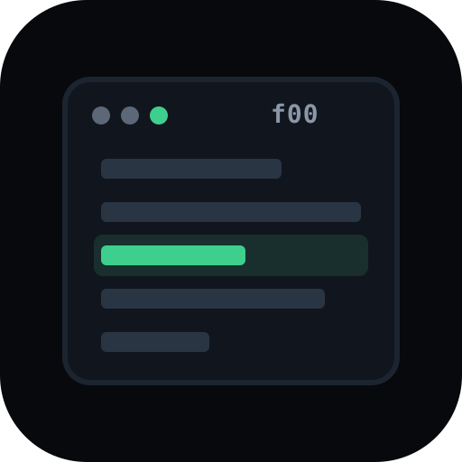

A · Prompt
Terminal $ f00 + cursor. Strong brand story for a CLI; works on dark site header.
@32px favicon preview
Palette matches f00.sh (#3ecf8e accent,
#07090c bg). Open files in
site/assets/logos/. Reply with A–E (or combos, e.g. “B app icon + D wordmark”).
Terminal $ f00 + cursor. Strong brand story for a CLI; works on dark site header.
Geometric f + linked zeros. Abstract, unique, good square lockup / sticker.
UI metaphor: directory rows with one active line. Explains the product in one glance.

Horizontal f00 for README / press headers. Pair with a square mark (B or E).
Favicon-first: bold f + double ring. Designed for 16–32px legibility.